- A · Presentación
- B · Primera versión
- C · Instrucciones de acceso
- D · Estado de desarrollo
- E · Autoría y recursos
A · Presentación del proyecto
Un factor, una esclusa y una guerra que se paga por adelantado
- Proyecto
- Vástara, universo transmedia
- Plataforma principal
- Videojuego · Vástara: la Esclusa (PC, Windows, Unity 6 HDRP)
- Plataforma conectada
- Sitio web interactivo · El Cerco, archivo público de Vástara
- Género
- Estrategia y defensa por oleadas, en primera persona
- Equipo
- Miguel Ángel Jiménez · Alejandro González
Vástara son cuatro tierras alrededor de una falla y doscientos catorce años de paz vigilada. La paz depende del Ícor, un recurso que solo sabe refinar la Forja, una liga de gremios sin rey que vende a todos los bandos. Antes de cada campaña, la Forja publica su cuota: el número exacto de vidas que va a costar, grabado en una placa y firmado por quien lo calculó.
El jugador es Halcé Vedrani, factor de una casa de comerciantes del delta, un hombre de cuentas y no de armas. Le han confiado la Esclusa de Vedre, la llave del delta, justo cuando la Casa Arbelas la sitia. Halcé no tiene ejército: tiene crédito, compañías pagadas y unas pocas gotas de Ícor.
«Todo tiene un precio. Lo difícil es saber quién lo paga.» — Halcé Vedrani
La experiencia: desde una sala de piedra preparas cada oleada en una mesa de mando. Luego vives el asalto en primera persona en los cuatro puntos a la vez: disparas el cañón del Canal y la bombarda de la Muralla, das cuerda a la compuerta de la Esclusa y vigilas la puerta trasera. Si cae un solo frente, cae la isla. Después del asalto llegan las cuentas: cobras, reparas y decides qué hacer con un prisionero enemigo y su Testigo.
En Vástara, un Testigo lleva un pliego sellado con lo que vio. La ley dice que el sello solo se abre si el Testigo muere. Por eso la verdad del mundo tiene un precio: para leerla hay que matar a quien la sabe. El juego te hace pagarlo. El pliego te da un código, y ese código abre la verdad en la web El Cerco.
Personajes
B · Primera versión de la plataforma
La demo: dos oleadas completas
La primera versión es un prototipo jugable con el ciclo entero de dos oleadas. Se puede descargar y jugar en Windows. Si no tienes Windows, el video de abajo muestra el gameplay real.
El ciclo de una oleada
- ParteYaruk informa: cuántos barcos vienen y por dónde.
- PreparaciónPagas a las compañías y repartes la tropa en la maqueta.
- AsaltoCinco minutos y cuatro frentes a la vez, en primera persona.
- RecuentoCobras, reparas y recibes al prisionero.
- TratoAdné sube por la escalera del agua y te vende Ícor.
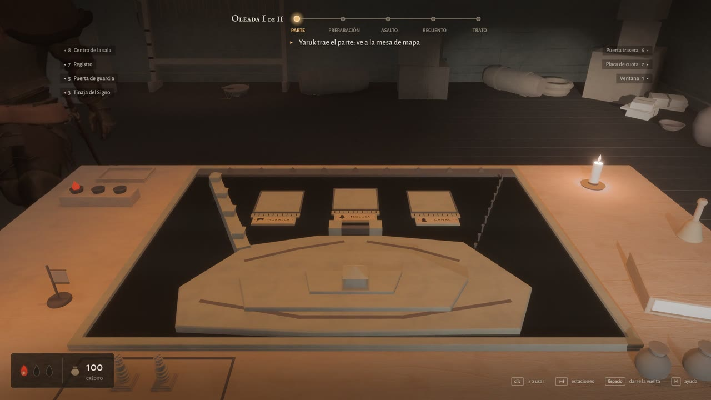
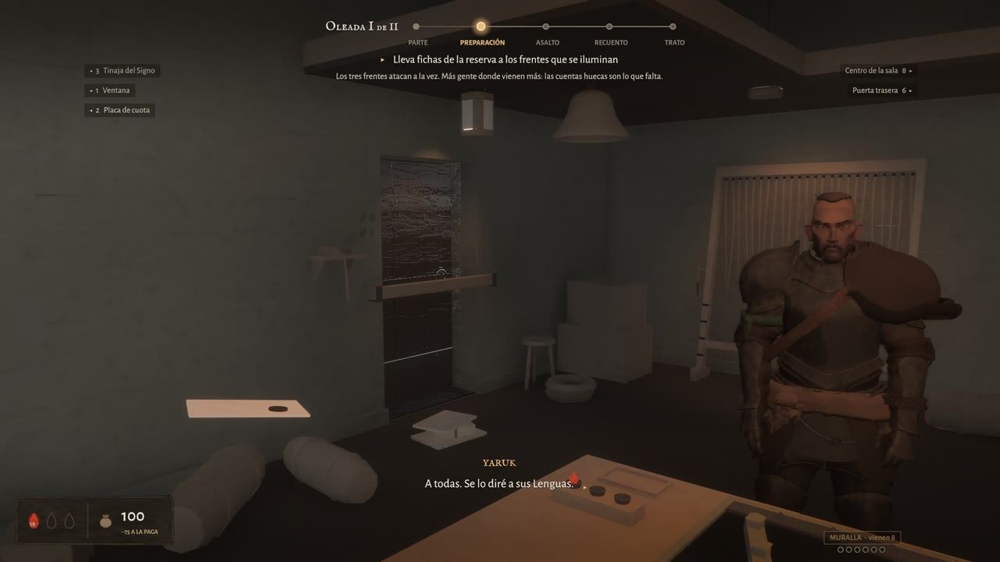
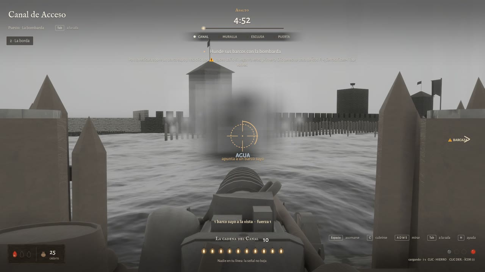
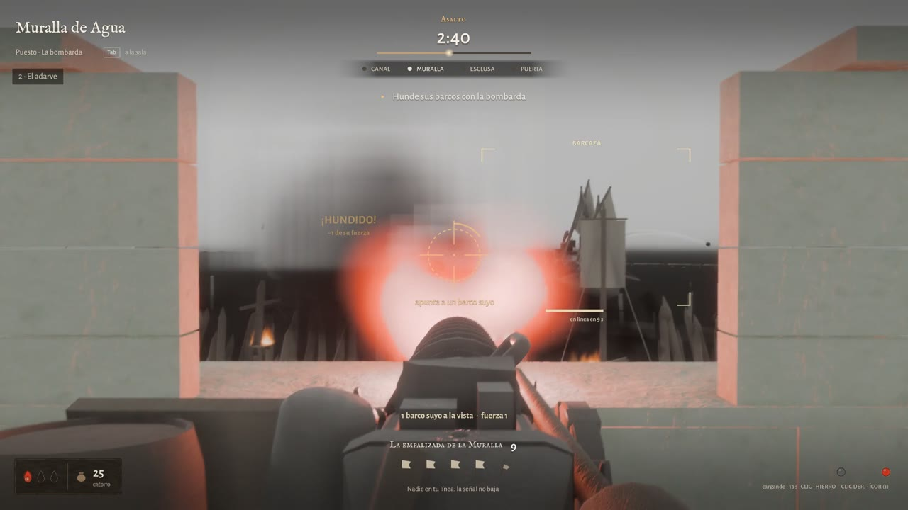
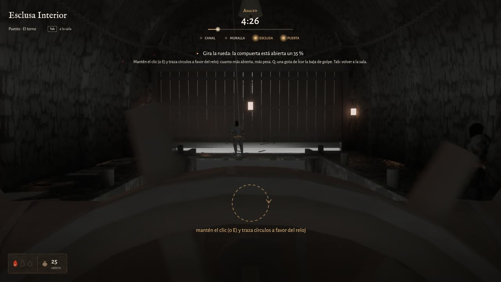
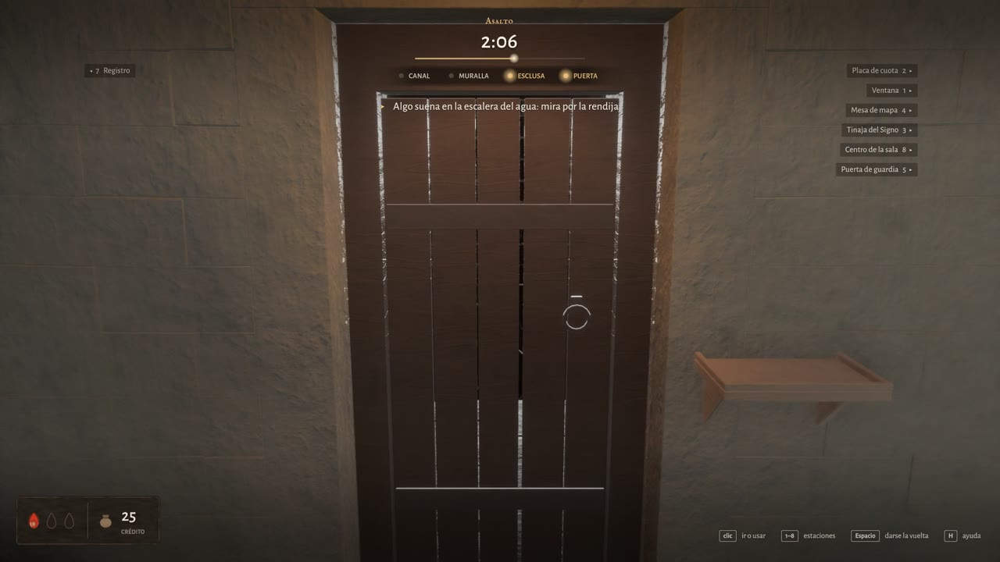
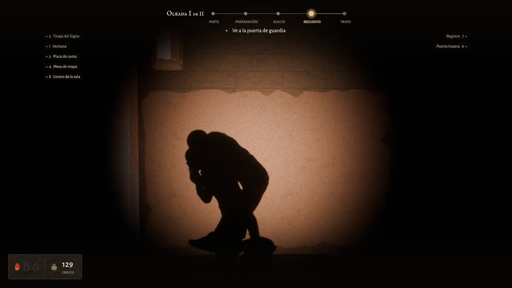
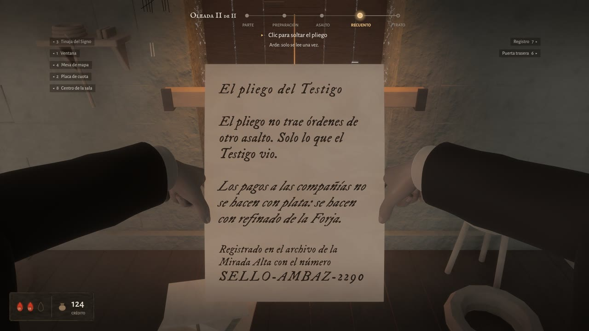
Pitch del proyecto
El Cerco: la otra mitad de la historia
El Cerco es el archivo público de Vástara: una enciclopedia escrita en la voz oficial de cada pueblo, con su versión de los hechos. Tiene un mapa en relieve que cambia con las épocas, una crónica que se lee como un libro, relatos, las cinco tierras, los personajes y sus costumbres. Todo lo que cuenta es la versión oficial y está incompleto a propósito.
Cuando escribes un código del juego en «Romper un sello», el lacre estalla, la frase oficial se tacha y aparece lo que vio el Testigo. Pero si en el juego ahorcaste al oficial en vez de matar al Testigo, te llega un acta de martirio, y su código hace que la web mienta todavía más.
- En el juegoDecides qué hacer con el prisionero y su Testigo.
- El pliegoSi matas al Testigo, su pliego se abre y lleva un número. Arde tras leerse.
- En la webEscribes el número en «Romper un sello».
- El desmentidoLa historia oficial se tacha y se reescribe con la verdad.
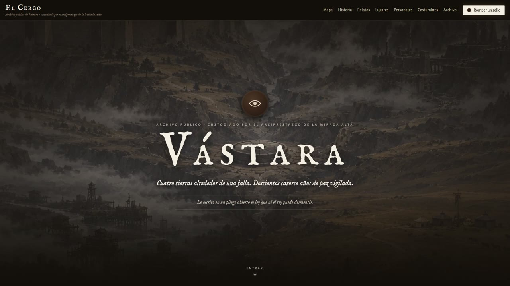

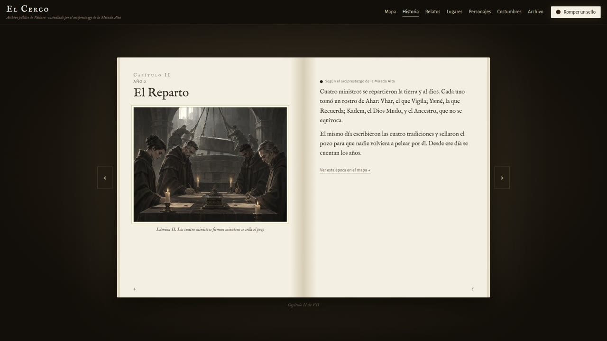
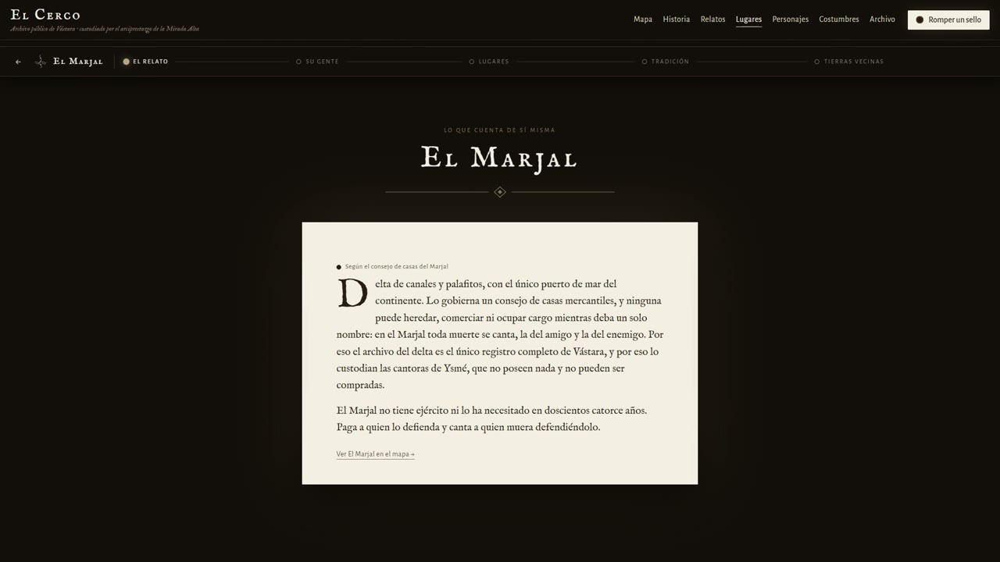
Teaser cinemático
Del tratamiento a la pantalla
| Decisión del tratamiento | Cómo se ve en la plataforma |
|---|---|
| El precio de la guerra es una cifra | La placa de cuota preside la sala, y cada orden se paga con crédito o con Ícor. Cada pago suena y se ve. |
| La verdad cuesta una vida | Para leer un pliego hay que matar al Testigo. La web solo revela lo que el jugador pagó en el juego. |
| Gastado · registrado · marcado | Todo en la sala está usado, salvo la placa y las gotas de Ícor, que son lo único que entregó la Forja. |
| Un único rojo | Paleta gris y parda. El rojo incandescente solo aparece en el Ícor, que es lo que se compra con muertos. |
| Luz solo sobre lo que importa | Los faroles alumbran las estaciones de trabajo (mesa, placa, registro, puertas) y el resto de la sala queda a oscuras. |
| La historia oficial miente | El Cerco está escrito en la voz de cada pueblo. Los pliegos la desmienten y las actas la exageran. |
C · Instrucciones de acceso
Cómo vivirlo por primera vez
Si tienes 10 minutos y Windows: juega
- Descarga el .zip y descomprímelo entero en una carpeta. No lo abras desde dentro del .zip.
- Abre
Vastara.exe. Windows puede avisar de que la aplicación es desconocida porque no está firmada: pulsa Más información → Ejecutar de todas formas. - Sigue la guía de la parte superior de la pantalla. Siempre indica la fase actual y qué hacer a continuación.
| Acción | Control |
|---|---|
| Ir a una estación de la sala | Clic sobre ella, o las teclas 1–8 |
| Volver atrás | Clic derecho o Espacio |
| Coger y soltar fichas o bolsas en la mesa | Mantener clic izquierdo y arrastrar |
| Ver la ayuda de la fase | Mantener H |
| En un frente: mirar | Clic derecho y arrastrar, o WASD / flechas |
| En un frente: disparar o actuar | Clic izquierdo (en la Esclusa, mantenerlo sobre la rueda) |
| En un frente: asomarse / cubrirse | Mantener Espacio / C |
| En un frente: volver a la sala | Tab o Esc |
| Abrir puertas · soltar el pliego | E o clic |
| Salir del juego | Alt + F4 |
Requisitos: Windows 10 u 11 de 64 bits, tarjeta gráfica con DirectX 12 (recomendada GTX 1060 o superior), unos 600 MB libres. Funciona con teclado y ratón.
Importante: cuando leas el pliego del Testigo, apunta su número antes de soltarlo, porque arde y no vuelve.
Si no puedes jugar: mira y luego explora
- Mira el video de gameplay (2:44). Al final aparece un pliego con su número de archivo: SELLO-AMBAZ-2290.
- Abre El Cerco en un ordenador (también funciona en el móvil, pero el mapa se disfruta más en pantalla grande).
- Recorrido sugerido: el prólogo → el Mapa (mueve la cronología de abajo y acércate con la rueda) → la Historia, que se lee como un libro → una tierra y sus personajes.
- Pulsa «Romper un sello» arriba a la derecha y escribe el código del video. Luego vuelve a la página de Cadaval o de la Forja y compara lo que decía antes con lo que dice ahora.
D · Estado de desarrollo
Lo que ya existe y lo que falta
| Componente | Estado |
|---|---|
| Sala de mando | Construida. Modelada en Blender, con luz horneada en HDRP y estaciones con interacción (mesa, placa, tinaja, registro y puertas). |
| Ciclo de juego | Completo. Parte, preparación, asalto, recuento, prisionero y trato, durante dos oleadas. |
| Asalto | Jugable. Canal, Muralla, Esclusa y puerta trasera a la vez, unos 5 minutos por oleada. |
| Prisioneros y Testigos | Jugable. Dos oficiales con sus Testigos y tres decisiones cada uno (interrogar, ahorcar o matar al Testigo). |
| Personajes | En escena. Yaruk y Adné, animados; Halcé en primera persona, con sus manos. |
| Conexión con la web | Funciona. Cuatro códigos (dos pliegos y dos actas) probados de punta a punta. |
| El Cerco | Publicada. Mapa 3D, crónica en 7 épocas, 3 relatos, 5 tierras, 7 personajes, 4 costumbres y archivo de pliegos. |
| Sonido del juego | Provisional. Efectos sintetizados por código. Sin voces: los diálogos van con subtítulos. |
| Juego completo | Pendiente. La demo tiene 2 de las 6 oleadas previstas. |
Qué puede experimentar hoy la audiencia
Una partida completa de dos oleadas, de unos 20 minutos, con victoria o derrota. Al final de cada oleada puede tomar una decisión moral cuyo resultado sale del juego y cambia lo que cuenta la web.
Limitaciones de esta primera versión
- Solo Windows y con una tarjeta gráfica decente. No hay versión para navegador ni para Mac, por eso añadimos el video de gameplay.
- No hay menú principal ni opciones: la partida empieza directamente en la primera oleada.
- El sonido es provisional y no hay voces. Los personajes hablan por subtítulos.
- La dificultad está calibrada con simulaciones y pocas pruebas con personas. La segunda oleada puede ser dura.
- El Cerco solo desbloquea los pliegos de los dos prisioneros de la demo. Los demás aparecen en el archivo como lacrados.
- El teaser cinemático se hizo en Blender y anticipa el tono, no es gameplay.
E · Autoría y recursos
Quién lo hizo y con qué
Equipo: Miguel Ángel Jiménez y Alejandro González.
Creación original del equipo
- Universo y narrativa: la Biblia transmedia, las cuatro civilizaciones, los personajes, los textos del juego y todo el contenido de El Cerco (crónica, relatos, fichas, pliegos y actas).
- Diseño del juego: el ciclo por oleadas, la economía de crédito e Ícor, los cuatro frentes, la regla del Testigo y los códigos que unen el juego y la web.
- Arte 3D: la sala, la maqueta, los frentes y los personajes (modelado, texturizado y luz en Blender), y la dirección visual del documento Visual DNA.
- Programación: la lógica del juego en C# (Unity 6 HDRP) y la web en HTML, CSS y JavaScript sin frameworks.
- Mapa de El Cerco: un relieve generado por script en Blender a partir de la geografía del mundo.
- Audiovisual: el guion y el montaje del pitch y del teaser, y la grabación del gameplay.
Recursos de terceros
- Barcos y bombarda (Sketchfab, licencia CC-BY 4.0), adaptados a la paleta del juego: Dromon medieval ship (Mitro123), Portuguese Carrack y Cog 02 (gogiart), Nao Victoria Galleon Ship (Javier López Cuadrado) y medieval Bombarde (Götz von Berlichingen).
- Animaciones base de Mixamo (Adobe), retocadas a mano con una capa de carácter propia.
- Texturas de material de ambientCG y Poly Haven (CC0).
- Tipografías: IM Fell English (Igino Marini) y Alegreya Sans (Huerta Tipográfica), ambas con licencia SIL Open Font.
- Motores y herramientas: Unity 6, Blender y FFmpeg.
Uso de inteligencia artificial
- Ilustraciones de El Cerco (retratos, épocas, territorios y costumbres): generadas con Gemini (Google) y ChatGPT (OpenAI) a partir de prompts escritos por el equipo, con la estética de Arcane como referencia. Después las recortamos y adaptamos a la papelería de la web.
- Música y efectos del pitch y del teaser: generados con ElevenLabs a partir de un plan de composición por escenas que escribimos nosotros.
- Modelos base de personaje: la armadura de Yaruk parte de un modelo generado con IA (Tripo) y publicado en Sketchfab. Lo rehicimos en Blender: topología, ropa, cara, pelo y texturas pintadas.
- Programación y scripts: desarrollados con asistencia de IA (Claude, de Anthropic). Las decisiones de diseño, la revisión y las pruebas en el juego son del equipo.